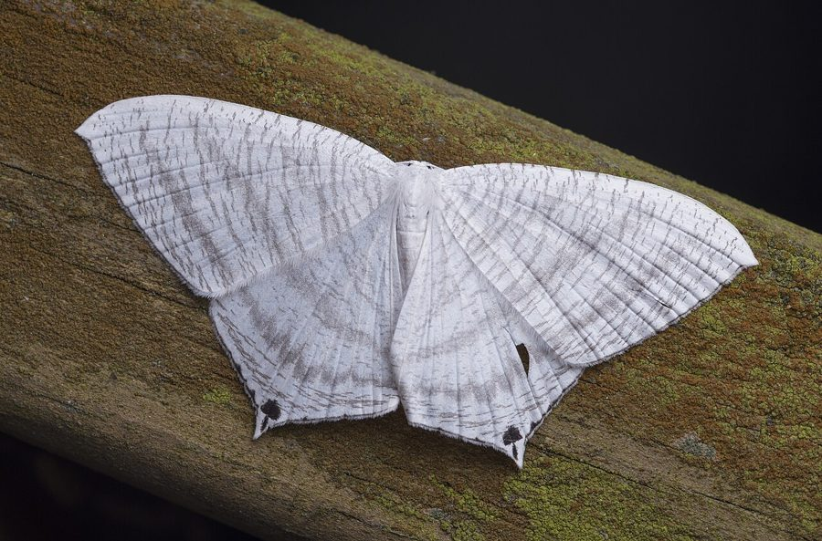

ग्रे स्वैलोटेल पतंगाGrey Swallowtail Moth
Micronia aculeata · Uraniidae · INS-0315

- Scientific name वैज्ञानिक नाम
- Micronia aculeata Guenée, 1857
- Family कुल
- Uraniidae
- Hindi हिंदी
- ग्रे स्वैलोटेल पतंगा
- Local names स्थानीय नाम
- grey swallowtail moth, grey swallowtail patanga
- Status here यहाँ की स्थिति
- native
- Movement आवागमन
- Resident, here all year
- Known from कहाँ दर्ज
- Others have published records from the wider Awadh–Purvanchal plain, none yet from Basti–Ayodhya अवध–पूर्वांचल से दूसरों के प्रकाशित अभिलेख, बस्ती–अयोध्या से अभी नहीं
- IUCN IUCN
- not evaluated
- Review समीक्षा
- not yet reviewed
When to look कब देखें
Present all year. साल भर मौजूद।
ग्रे स्वैलोटेल पतंगा / Grey Swallowtail Moth
Micronia aculeata Guenée, 1857 — Uraniidae
ग्रे स्वैलोटेल पतंगा — यह सफेद रंग का एक पतंगा है जिसके पंखों पर भूरे-धूसर रंग की महीन धारियाँ और तीन तिरछी पट्टियाँ होती हैं। इसके पिछले पंख के बाहरी किनारे पर एक छोटा कोना (पूंछ जैसा उभार) होता है जिसके आधार पर एक काला धब्बा पाया जाता है। इसके पंखों का फैलाव 42 से 50 मिमी होता है।
Quick Identification त्वरित पहचान
| Feature | Description |
|---|---|
| Wingspan | 42–50 mm (Hampson 1895, p. 117) |
| Body | Head, thorax, and abdomen white with a fuscous tinge (Hampson 1895, p. 117) |
| Wings | White, closely striated with fuscous (Hampson 1895, p. 117) |
| Bands | Somewhat ill-defined antemedial, medial, and postmedial fuscous oblique bands; fine marginal line (Hampson 1895, p. 117) |
| Hindwing tail | Angle at vein 4 on hindwing; black spot at base of tail of hindwing (Hampson 1895, p. 117) |
| Underside | White or fuscous (Hampson 1895, p. 117) |
Field tip: Look for a white moth finely striated with dark grey-brown, with three oblique fuscous bands, an angled hindwing margin, and a black spot at the base of the tail of the hindwing (Hampson 1895, p. 117).
हिंदी: इसके पंखों का फैलाव 42 से 50 मिमी होता है। सफेद पंखों पर भूरे-धूसर रंग की महीन धारियाँ, तीन तिरछी पट्टियाँ और पिछले पंख की छोटी पूंछ के आधार पर एक काला धब्बा इसकी पहचान है।
Morphology आकारिकी
Biometrics:
| Measurement | Range | Source |
|---|---|---|
| Expanse | 42–50 mm | Hampson (1895, p. 117) |
Hampson (1895, p. 117) describes the adult: "Head, thorax, and abdomen white, with a fuscous tinge. Wings white, closely striated with fuscous ; somewhat ill-defined antemedial, medial, and postmedial fuscous oblique bands ; a fine marginal line and black spot at base of tail of hind wing. Underside white or fuscous." Under the genus Micronia, Hampson (1895, p. 117) notes: "Palpi porrect, slender, and rather long. Antennae thickened and flattened... Fore wing with the costa arched towards apex, which is acute ; the outer margin straight... Hind wing with an angle at vein 4".
हिंदी: हैंपसन (1895) के अनुसार इसका सिर, वक्ष और पेट धुंधले सफेद होते हैं। अगले पंख का सिरा नुकीला और बाहरी किनारा सीधा होता है, जबकि पिछले पंख पर एक कोना और उसके आधार पर काला धब्बा होता है।
Behaviour & Ecology व्यवहार और पारिस्थितिकी
Not available in consulted sources.
हिंदी: इसके व्यवहार और पारिस्थितिकी का विस्तृत विवरण देखे गए स्रोतों में उपलब्ध नहीं है।
Life Cycle / Phenology जीवन चक्र
Not available in consulted sources.
हिंदी: इसके जीवन चक्र और मौसमी गतिविधि का विवरण देखे गए स्रोतों में उपलब्ध नहीं है।
Host Plants or Prey आहार
Not available in consulted sources.
हिंदी: इसके भोजन-पौधों का विवरण देखे गए स्रोतों में उपलब्ध नहीं है।
Predators / Natural Enemies शत्रु
Not available in consulted sources.
हिंदी: इसके प्राकृतिक शत्रुओं का विवरण देखे गए स्रोतों में उपलब्ध नहीं है।
Agricultural / Human Relevance कृषि प्रासंगिकता
Not available in consulted sources.
हिंदी: इसके कृषि या मानव महत्व का विवरण देखे गए स्रोतों में उपलब्ध नहीं है।
Expected Locally स्थानीय रूप से अपेक्षित
Not a field record. Written from published accounts for eastern Uttar Pradesh. No confirmed local sighting yet — if you have seen it, that is what the atlas needs.
अभी तक स्थानीय पुष्टि नहीं। यह विवरण प्रकाशित स्रोतों से है, किसी अवलोकन से नहीं।
Hampson (1895, p. 117) gives its range as throughout India. GBIF holds published records from the wider Awadh–Purvanchal plain, none yet from Basti–Ayodhya: two photographed records by two observers, one from Varanasi on 26 October 2019 and one from Amethi on 15 October 2026. A first local record would be a clear photograph showing the white fuscous-striated wings, oblique bands, and black spot at the base of the tail of the hindwing with place and date, sent through the About page.
हिंदी: हैंपसन (1895) ने इसे पूरे भारत में दर्ज किया है। जीबीआइएफ (GBIF) में वाराणसी और अमेठी से दो अभिलेख हैं, पर बस्ती या अयोध्या से अभी कोई अभिलेख नहीं है।
Distribution वितरण
Global range: Hampson (1895, p. 117) gives: "China ; Formosa ; throughout India, Ceylon, and Burma ; Andamans ; Java ; Borneo."
In India: Throughout India and the Andamans (Hampson 1895, p. 117).
In Uttar Pradesh: GBIF holds two photographed records by two observers: Varanasi (26 October 2019) and Amethi (15 October 2026).
In Basti district / eastern UP: GBIF holds no record from Basti or Ayodhya.
हिंदी: हैंपसन (1895) के अनुसार यह चीन, फॉर्मोसा, पूरे भारत, श्रीलंका, बर्मा, अंडमान, जावा और बोर्नियो में पाया जाता है। उत्तर प्रदेश में जीबीआइएफ पर वाराणसी और अमेठी के दो अभिलेख हैं, पर बस्ती और अयोध्या से कोई अभिलेख नहीं है।
Research Questions शोध प्रश्न
Anyone can investigate these | कोई भी इन प्रश्नों की जाँच कर सकता है
- Does Micronia aculeata occur in Basti and Ayodhya districts, given records in Varanasi and Amethi? / क्या बस्ती और अयोध्या जिलों में ग्रे स्वैलोटेल पतंगा मिलता है?
- In which months are adults active in eastern Uttar Pradesh (given October records in Varanasi and Amethi)? / पूर्वी उत्तर प्रदेश में यह पतंगा किन महीनों में सक्रिय रहता है?
- Which larval host plants does Micronia aculeata use in eastern Uttar Pradesh?
- Do adults rest with wings spread flat by day on foliage or walls in the region?
- Can a child spot the black spot at the base of the tail of the hindwing on a resting moth without touching it? (No equipment needed.)
हिंदी: कोई भी व्यक्ति बिना किसी उपकरण के बैठे हुए सफेद-धूसर पतंगे के पिछले पंख के कोने पर बने छोटे काले बिंदु को देख सकता है।
Similar Species मिलती-जुलती प्रजातियाँ
| Species | How to tell apart | हिंदी |
|---|---|---|
| No look-alike listed | No look-alike is given in the consulted sources (Hampson 1895, p. 117) | देखे गए स्रोतों में कोई मिलती-जुलती प्रजाति नहीं दी गई है |
Field rule: A white moth (42–50 mm expanse) closely striated with fuscous, crossed by three oblique fuscous bands, and bearing a black spot at the base of the hindwing tail-angle is Micronia aculeata (Hampson 1895, p. 117).
हिंदी: महीन धूसर धारियों वाले सफेद पंख, तीन तिरछी पट्टियाँ और पिछले पंख के कोने पर काला बिंदु ग्रे स्वैलोटेल पतंगा की पहचान हैं।
Taxonomy & Classification वर्गीकरण
Original description. Guenée, A. (1857). Uranides et Phalénites, vol. 2, p. 26, pl. 13, fig. 8 (cited in Hampson 1895, p. 117).
Subspecies. Not available in consulted sources.
Family and order placement. Order Lepidoptera, family Uraniidae, genus Micronia (Hampson 1895, p. 117, entry 3027). Other atlas moths in order Lepidoptera include Cross-line Geometer Moth (Traminda mundissima) and Small Emerald Moth (Comostola laesaria) in Geometridae.
Phylogenetic notes. Placed in Micronia and Uraniidae by both Hampson (1895, p. 117) and GBIF.
IUCN status rationale. Not evaluated on the IUCN Red List.
हिंदी: इसका पहला वैज्ञानिक वर्णन गुएने (1857) ने किया था। यह Uraniidae कुल और Micronia वंश की प्रजाति है।
Photo Gallery फोटो गैलरी
No photos yet — add field photos to media/species/grey_swallowtail_moth/ and run node scripts/sync_photos.js.
Photos needed आवश्यक फोटो
- [ ] Dorsal view showing the white fuscous-striated wings and three oblique bands (ऊपरी सतह, धारियाँ और तीन तिरछी पट्टियाँ दिखाता चित्र)
- [ ] Hindwing margin showing the angle and black spot at its base (पिछले पंख का कोना और काला बिंदु दिखाता चित्र)
References संदर्भ
- Guenée, A. (1857). Histoire Naturelle des Insectes. Species Général des Lépidoptères. Uranides et Phalénites. Vol. 2, p. 26, pl. 13, fig. 8 (cited in Hampson 1895, p. 117).
- Hampson, G. F. (1895). The Fauna of British India, including Ceylon and Burma. Moths. Vol. 3 (p. 117). Taylor and Francis, London.
- GBIF Occurrence Data — Micronia aculeata Guenée, 1857, India (2025).
Source file: species/fauna/insects/grey_swallowtail_moth.md